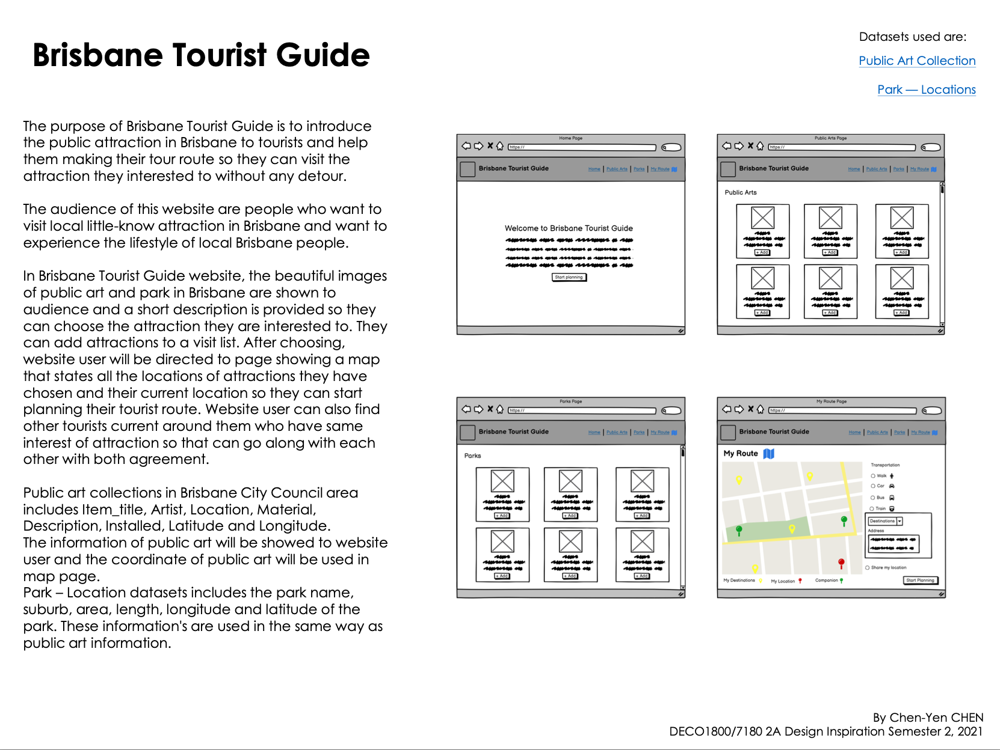
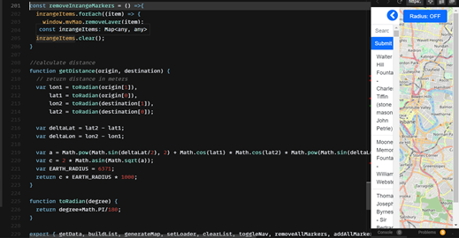

About Me

Hello guys, my name is Chen-Yen CHEN, I am 22 years old and i am an undergraduate student studying Bachelor of Information Technology at the University of Queensland and i really enjoy programming. I once worked as an intern in a company and help them to build a website about disease managment and i keep learning and getting experience in this area. I also have other hobbies. I love to playing guitar because i get sense of accomplishment every time i succeed in practicing the song i love listening.
My padlet: https://padletuq.padlet.org/chenyenchen/i61ap61y38xi3e92
My teamzone: https://possum.uqcloud.net
Contributions
2A Design Inspiration
Goal
The goal of 2A Design Inspiration is to stimulate interesting project directions and concepts. We explored the data at Queensland Government data on data.qld.goc.au and generate interesting ways of searching, filtering and presenting the data by producing a poster that illustrates our idea.
Idea development
The project start with brainstorming session. In contact session, tutor send us a link which can generate an idea randomly and we can change the stakeholders and style of the website to find an appropriate one. Then I found a data set interesting which is Public Art collection. I looked into the dataset and there are informations of arts and their locations so i come up with an idea that i probably can put a map in my website and show the location of all arts to tell user where they can find it. It is an interesting idea so our group choose my idea in part 2C Project Proposal.
Poster
2C Project Proposal
Goal
The goal of 2C Project Proposal is to refine and further develop a specific concept into a clear and coherent design for development for the rest of the semester. Then team will present their finalised concepts by a report describing the proposed design and functionalities.
Contributions
My work in this part is to do a background inspiration and research that has informed the design. Find some exsiting applications that are similar to our website and analyse why they designed the website like this and discuss on how have they influenced my design and how it change my concept.
2D Work-in-Progress
Goal
The goal of this part is to finalise our design concepts, implement key challenges that have been considered.
Contributions
My first contribution in this part was implementing the home page. The second contribution was implementing the top-attraction page which represent all the public art in a list. Users are able to select multiple attractions and their location will be showed on the map. I implement this by using data API and Openstreetmap API. This part require a lot of js codes for example when user click on the attractions in the list, the clickevent is to change the list item css style to active so user will have response from website and the information of that attraction will be stored. Then the map will make a marker which shows the location of that attraction and the informations will be showned above that marker.
2E Final Delivery
Goal
The goal of this part is to continue to work on the implementation of our design concept. We should aim to have most important feature of the application functionally and experientially complete.
Contributions
In this part, i added an arrow button that can hide the attraction list in oreder to let user see the full view of map. Moreover, i added a radius mode. Radius mode is designed for user who are lazy. They only want to visit the attraction near the place they lived in. In radius mode, user can find the public art in the range according to the selected coordinate position and radius size. The instructions of using it is to firstly turn on the radius mode by clicking the radius mode button. Then, click on the map to set a location and drag the bar below to set the radius size. A circle will formed on the map and all the attraction in that circle will be marked. User can click on the marker to see the informations of that attraction.
The problem is when there are too many marker in that circle, the website will become very sluggish is because every time user drag the bar, the map will keep adding marker on the map at the same point but didn't remove the markers that have same coordinate. Moreover, when user select another location, the marker generated in first circle won't be removed and generate new markers in second circle.
To optimize the website, luckly the problems above can be solved by one functions. I intialize a map/array that store the marker user selected temporaryly. And put a remove marker function before every user event like clicking on the map or draging the bar so the map won't have two marker that have same coordinate.
Code
Reflections
In 2A Design inspiration part, I think there are a large amount of improvement that need to be done. Firstly, i didn;t know how to use inVision to make prototype, this leading to the prototype i made is simple and uninteractive. InVision is a very usefull tool for making prototype so i need to spend time on learning how to use it and do more exercise to improve my designing skills.
In 2D Work-in-Progress and 2E FinalDelivery, we implemented almost every functionality of the website we stated in MVP, and i love the final website functionality. The website is interactive and really help user to find the attractions they interested in. However, the final visual aesthetic still need to be improved. Throught the whole course during this semester, I continueting learning new things about HTML,CSS,JS and some basis of back-end technology. I also learn how to use API to make webpage dynamically.
In addition, I have learned about how to allocate with other teammembers. At the beginning of this semester, we have a huge problem on communications. Some teammembers didn't play an interactive role in a group, they didn't give instant response so we fell behide the schedule. Then, tutor gave us a very useful advice is that we need to have more meeting every week. This really improve our problems. I learned the importance of communications. It can make our team work more efficiently. And I think everyone in our team did well in 2D Work-in-Progress and 2E Final Delivery.
To conclude, Design Computing Studio is a really usefule course for my future career. It taught me not only programming skills and design skills but also to work as a team.
References
Bootstrap: https://getbootstrap.com/
Fontawesome: https://fontawesome.com/
Leafletjs: https://leafletjs.com
OpenStreetMap: https://www.openstreetmap.org/